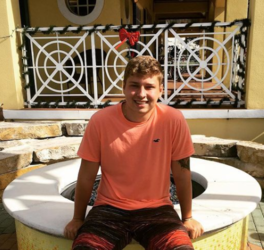

Curriculo

Lorenzo Lucas Cantarella
Desenvolvedor Web
FORMAÇÃO
SISTEMAS DE INFORMAÇÃO - Cursando 6º período no turno noturno na FAESA
Ensino Médio - Charles Darwin, unidade Coqueiral de Aracruz - Conclusão 2017
Curso de Inglês avançado - Number One, Coqueiral de Aracruz - Conclusão 2016
Experiência Profissional
Estágio de férias na empresa W2 Informática (Coqueiral de Aracruz), manutenção e assistência técnica a computadores e consultoria em TI (60 horas)
Estagiário na Secretaria de Economia e Planejamento do Espirito Santo(SEP), Suporte a usuários, computadores e impressoras. (1 Ano)